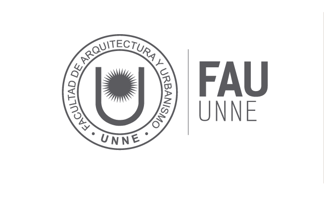

Facultad de Arquitectura y Urbanismo

Diseño Grafico:
La carrera de Diseño Gráfico en la Universidad Nacional del Nordeste (UNNE) se dicta en la Facultad de Arquitectura y Urbanismo (FAU), ubicada en Resistencia, Chaco. Otorga un título con reconocimiento oficial y validez nacional.
Estructura y Duración:
- Título otorgado: Diseñador/a Gráfico/a (Título de Grado con validez nacional).
- Duración: 4 años.
- Modalidad: Presencial.
- Carga horaria: Varía entre 2.715 y 3.120 horas reloj según el plan de estudios vigente (Plan 2019).
- Plan de estudios: Está compuesto por 29 asignaturas en total (1 curso de ingreso, 25 materias obligatorias y 4 materias optativas) divididas en tres ciclos de formación.
Organización del Plan de Estudios:
El plan de estudios está estructurado en ciclos anuales que avanzan desde los conceptos básicos de la comunicación visual hasta la inserción profesional:
- Primer Año (Ciclo Introductorio): Se enfoca en las herramientas base del diseño. Cursás asignaturas como Taller de Diseño Gráfico I, Sistemas de Representación, Morfología I, Tipografía I, Comunicación I e Introducción al Diseño.
- Segundo y Tercer Año (Formación Disciplinar): Se profundiza en la complejidad de los mensajes visuales, la tecnología de impresión y la historia de la disciplina. Incluye materias como Morfología II, Tipografía II, Tecnología Gráfica e Historia del Diseño Gráfico.
- Cuarto Año (Formación Profesional): Está orientado a la práctica real y la autogestión. Se cursan materias como Gestión de Proyectos y Emprendimientos, Organización y Ejercicio Profesional, una Práctica Profesional Asistida y el Proyecto Final de Carrera.
Campo Ocupacional y Salida Laboral:
El egresado de la FAU-UNNE está capacitado para proyectar de forma independiente o en equipos interdisciplinarios en áreas como:
- Identidad Visual: Creación de marcas, logotipos e isotipos para empresas e instituciones.
- Diseño Editorial: Diarios, revistas, catálogos y libros.
- Diseño Digital e Interfaces: Sitios web, aplicaciones móviles y piezas de comunicación multimedia.
- Sistemas de Señalización: Cartelería urbana, vial y arquitectónica (arquigrafía).
- Campañas Publicitarias: Gráfica para medios de comunicación tradicionales y digitales.
Arquitectura:
Fundamentos de la carrera:
El objeto de la profesión de Arquitecto comprende la planificación, proyección, construcción y significación del hábitat humano en todas sus escalas y complejidad. Este será su ámbito de creación, producción, reflexión, crítica y transformación, ejerciéndolo desde distintos lugares de actuación profesional.
A partir de esta concepción se entiende entonces al hacer del arquitecto como una profesión que se ocupa del hábitat humano, pero que se configura de distintas maneras según el lugar que ocupe en el entramado socio productivo en el que actúe.
Si bien su formación debe ser universal, se pretende formar un arquitecto que entienda el hábitat humano en su integralidad, en el contexto geográfico, histórico y sociocultural que desempeñará su profesión, sensible a sus necesidades y a sus condicionantes ambientales, económicas y productivas reales.
La Facultad de Arquitectura y Urbanismo (FAU) de la Universidad Nacional del Nordeste (UNNE), con sede central en la ciudad de Resistencia, Chaco, dicta la carrera de Arquitectura.
Estructura de la Carrera de Arquitectura:
La carrera forma profesionales capacitados para diseñar, proyectar, dirigir, calcular y ejecutar obras de arquitectura, estructuras, instalaciones y urbanismo, así como realizar tasaciones y peritajes de higiene y seguridad.
- Duración: 6 años.
- Validez: Título de validez nacional, acreditado ante la CONEAU (Res. 1254/2018 ME).
- Dirección actual: Arq. Nicolás Caballero.
- Ciclos de Formación:
- Ciclo Introductorio: Nivel 1 (690 horas).
- Formación Disciplinar: Niveles 2, 3 y 4 (aproximadamente 660 horas por nivel).
- Formación Profesional: Niveles 5 y 6.
- Áreas de Conocimiento: Comunicación/Forma, Proyecto/Planeamiento, Tecnología/Producción/Gestión y Ciencias Sociales/Humanas.
Información de Gestión para Estudiantes:
- Ingresantes: El proceso se gestiona de manera virtual a través de la plataforma Inscripciones UNNE / SIU-Guaraní. Los requisitos estándar incluyen DNI, foto 4x4, título secundario (o constancia de no adeudar materias) y carnet de vacunación.
- Reinscripción Anual Obligatoria: Todos los estudiantes de la FAU (excepto ingresantes) deben realizarla anualmente (habitualmente entre febrero y marzo) para mantener la condición de alumno regular. Para ser considerado regular, se requiere haber aprobado al menos 2 asignaturas en el año académico anterior.
Plan de Estudios:
El Plan de Estudios de la carrera de Arquitectura en la FAU-UNNE está organizado en 6 niveles (años) y se estructura bajo un sistema de correlatividades que combina materias anuales y cuatrimestrales. Su eje central es el área de Proyectos (los Talleres).
A continuación, se detalla la distribución de las asignaturas por año:
Nivel 1 (Primer Año)
- Taller de Arquitectura I (Anual)
- Morfología I (Anual)
- Estructuras I (Anual)
- Tecnología de los Materiales
- Introducción a la Historia de la Arquitectura y el Urbanismo
- Sistemas de Representación V. y Expresión I
- Matemática
Nivel 2 (Segundo Año)
- Taller de Arquitectura II (Anual)
- Morfología II (Anual)
- Estructuras II (Anual)
- Instalaciones I (Anual)
- Historia de la Arquitectura y el Urbanismo I
- Construcciones I
- Expresión II
Nivel 3 (Tercer Año)
- Taller de Arquitectura III (Anual)
- Estructuras III (Anual)
- Instalaciones II (Anual)
- Historia de la Arquitectura y el Urbanismo II
- Construcciones II
- Teoría de la Arquitectura
Nivel 4 (Cuarto Año)
- Taller de Arquitectura IV (Anual)
- Estructuras IV (Anual)
- Construcciones III (Anual)
- Historia de la Arquitectura y el Urbanismo III
- Planeamiento Urbano I
- Asignatura Electiva I
Nivel 5 (Quinto Año)
- Taller de Arquitectura V (Anual)
- Planeamiento Urbano II
- Organización y Dirección de Obra
- Legislación y Práctica Profesional
- Informática Aplicada
- Asignatura Electiva II
Nivel 6 (Sexto Año)
- Trabajo Final de Carrera (TFC): Es la tesis o proyecto final integrador que condensa todos los conocimientos adquiridos para obtener el título de Arquitecto/a.
- Práctica Profesional Supervisada (PPS): Pasantías o prácticas en ámbitos públicos o privados acreditadas por la facultad.